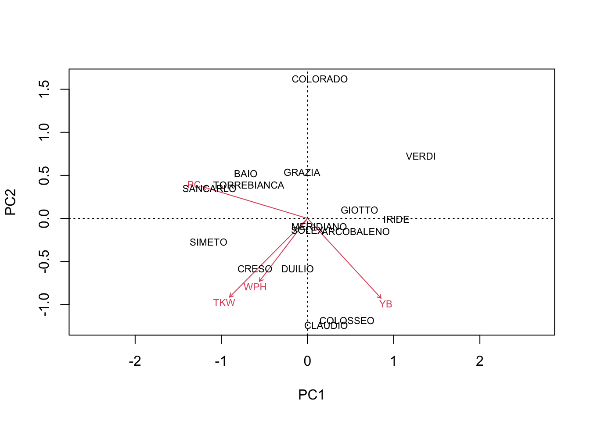
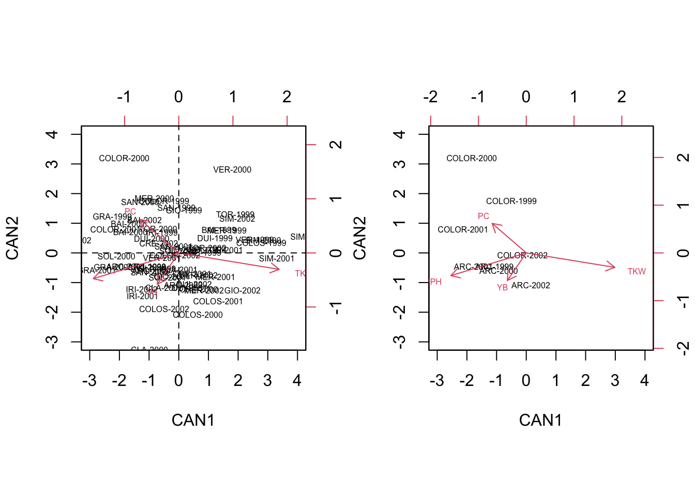
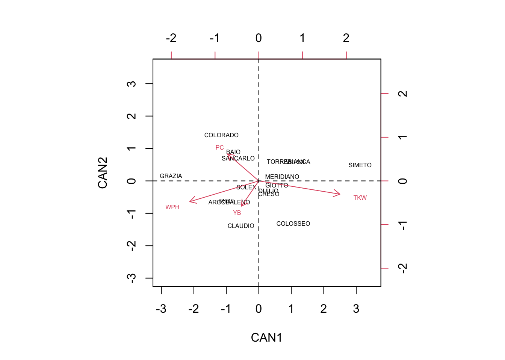

library(statforbiology)
dataset <- getAgroData("WheatQuality4years")
dataset$Year <- factor(dataset$Year)
head(dataset)
## Genotype Year WPH YB TKW PC
## 1 ARCOBALENO 1999 81.67 46.67 44.67 12.71
## 2 ARCOBALENO 2000 82.83 19.67 43.32 11.90
## 3 ARCOBALENO 2001 83.50 38.67 46.78 13.00
## 4 ARCOBALENO 2002 78.60 82.67 43.03 12.40
## 5 BAIO 1999 80.30 41.00 51.83 13.91
## 6 BAIO 2000 81.40 20.00 41.43 12.80A few days ago, a colleague of mine wanted to hear my opinion about what multivariate method would be the best for a randomised field experiment with replicates. We had a nice discussion and I thought that such a case-study might be generally interesting for the agricultural sciences; thus, I decided to take my MacBook, sit down, relax and write a new post on this matter.
My colleague’s research study was similar to this one: a randomised block field experiment (three replicates) with 16 durum wheat genotypes, which was repeated in four years. The quality of grain yield was assessed by recording the following four traits:
- kernel weight per hectoliter (WPH)
- percentage of yellow berries (YB)
- kernel weight (grams per 1000 kernels; TKW)
- protein content (% d.m.; PC)
My colleague had averaged the three replicates for each genotype in each year, so that the final dataset consisted of a matrix of 64 rows (i.e. 16 varieties x 4 years) and 4 columns (the 4 response variables). Taking the year effect as random, we have four random replicates for each genotype, across the experimental seasons.
You can have a look at this dataset by loading the ‘WheatQuality4years.csv’ file, that is available in the ‘statforbiology’ package, and it can be loaded by using the following codes.
My colleague’s question
My colleague’s question was: “can I use a PCA biplot, to have a clear graphical understanding about (i) which qualitative trait gave the best contribution to the discrimination of genotypes and (ii) which genotypes were high/low in which qualitative traits?”.
I think that the above question may be translated into the more general question: “can we use PCA with data from designed experiments with replicates?”. For this general question my general answer has to be NO; it very much depends on the situation and aims. In this post I would like to show my point of view, although I am open to discussion, as usual.
Independent subjects or not?
I must admit that I appreciated that my colleague wanted to use a multivariate method; indeed, the quality of winter wheat is a ‘multivariable’ problem and the four recorded traits are very likely correlated to each other. Univariate analyses, such as a set of four separate ANOVAs (one per trait) would lead us to neglect all the reciprocal relationships between the variables, which is not an efficient way to go.
PCA is a very widespread multivariate method and it is useful whenever the data matrix is composed by a set of independent subjects, for which we have recorded a number of variables and we are only interested in the differences between those independent subjects. In contrast to this, data from experiments with replicates are not composed by independent subjects, but there are groups of subjects treated alike. For example, in our case study we have four replicates per genotype and these replicates are not independent, because they share the same genotype. Our primary interest is not to study the differences between replicates, but, rather, the differences between genotypes, that are groups of replicates.
What happens if we submit our matrix of raw data to PCA? The subjects are regarded as totally independent from one another and no effort is made to keep them together, depending on the group (genotype) they belong to. Consequently, a PCA biplot (left side, below) offers little insight: when we isolate, e.g., the genotypes ARCOBALENO and COLORADO, we see that the four replicates are spread around the space spanned by the PC axes, so that we have no idea about whether and how these two groups are discriminated (right side, below).
library(vegan)
# PCA with raw data
par(mfrow = c(1,2))
pcdata <- dataset[,3:6]
row.names(pcdata) <- paste(abbreviate(dataset$Genotype, 3),
dataset$Year, sep = "-")
pcaobj <- rda(pcdata, scale = T)
biplot(scores(pcaobj)$sites,
scores(pcaobj)$species,
cex = 0.5, xlim = c(-1,1), ylim =c(-2,2),
expand = 0.5)
biplot(scores(pcaobj)$sites[c(1:4, 13:16),],
scores(pcaobj)$species,
cex = 0.5, xlim = c(-1,1), ylim =c(-2,2),
expand = 3)
After seeing this, my colleague came out with his next question: “what if we work on the genotype means?”. Well, when we make a PCA on genotype means, the resulting biplot appears to be clearer (see below), but such clarity is not to be trusted. Indeed, the year-to-year variability of genotypes has been totally ‘erased’ and played no role in the construction of such biplot. Therefore, there is no guarantee that, for each genotype, all the replicates can be found in the close vicinity of the genotype mark. For example, in the biplot below we see that COLORADO and ARCOBALENO are very distant, although we have previously seen that the replicates were not very well discriminated.
# PCA with genotype means
par(mfrow = c(1,1))
avgs <- aggregate(dataset[,3:6], list(dataset$Genotype),
mean)
rownames(avgs) <- avgs[,1]
avgs <- avgs[,-1]
pcaobj2 <- vegan::rda(avgs, scale = T)
biplot(pcaobj2, scaling = 2)
In simple words, PCA is not the right tool, because it looks at the distance between individuals, but we are more concerned about the distance between groups of individuals, which is a totally different concept.
Obviously, the next question is: “if PCA is not the right tool, what is the right tool, then?”. My proposal is that Canonical Variate Analysis (CVA) is much better suited to the purpose of group discrimination.
What is CVA?
Canonical variates (CVs) are similar to principal components, in the sense that they are obtained by using a linear transformation of the original variables (\(Y\)), such as:
\[CV = Y \times V\]
where \(V\) is the matrix of transformation coefficients. Unlike PCA, the matrix \(V\) is selected in a way that, in the resulting variables, the subjects belonging to the same group are kept close together and, thus, the discrimination of groups is ‘enhanced’.
This is clearly visible if we compare the previous PCA biplot with a CVA biplot. Therefore, let’s skip the detail (so far) and perform a CVA, by using the CVA() function in the statforbiology package, that is the companion package for this blog. Please, note that, dealing with variables in different scales and measurement units, I decided to perform a preliminary standardisation process, by using the scale() function.
# Loads the packages
library(statforbiology)
# Standardise the data
groups <- dataset$Genotype
Z <- apply(dataset[,3:6], 2, scale, center=T, scale=T)
head(Z)
## WPH YB TKW PC
## [1,] 0.3375814 -0.003873758 -0.37675661 -0.5193726
## [2,] 0.7681267 -1.154020460 -0.59544503 -1.5621410
## [3,] 1.0168038 -0.344657966 -0.03495471 -0.1460358
## [4,] -0.8018791 1.529655178 -0.64242254 -0.9184568
## [5,] -0.1709075 -0.245404565 0.78310197 1.0254693
## [6,] 0.2373683 -1.139963112 -0.90160881 -0.4035095
# Perform a CVA with the aomisc package
cvaobj <- CVA(Z, groups)The CVA biplot
The main results of a CVA consist of a matrix of canonical coefficients and a matrix of canonical scores. Both these entities are available as the output of the CVA() function.
Vst <- cvaobj$coef # canonical coefficients
CVst <- cvaobj$scores # canonical scoresThese two entities resemble, respectively, the rotation matrix and principal component scores from PCA and, although they have different properties, they can be used to draw a CVA biplot.
# biplot code
par(mfrow = c(1, 2))
row.names(CVst) <- paste(abbreviate(dataset$Genotype, 3),
dataset$Year, sep = "-")
biplot(CVst[,1:2], Vst[,1:2], cex = 0.5,
xlim = c(-3,4), ylim = c(-3, 4))
abline(h=0, lty = 2)
abline(v=0, lty = 2)
biplot(CVst[c(1:4, 13:16),1:2], Vst[,1:2], cex = 0.5,
xlim = c(-3,4), ylim = c(-3, 4),
expand = 24)
We see that, in contrast to the PCA biplot, the four replicates of each variable are ‘kept’ relatively close together, so that the groups are well discriminated. For example, we see that the genotype COLORADO is mainly found on the second quadrant and it is pretty well discriminated by the genotype ARCOBALENO, which is mainly found on the third quadrant.
Furthermore, we can also plot the scores of centroids for all groups, that are available as the output of the CVA() function.
cscores <- cvaobj$centroids
# biplot code
par(mfrow = c(1,1))
biplot(cscores[,1:2], Vst[,1:2], cex = 0.5,
xlim = c(-3,3.5), ylim = c(-3, 3.5))
abline(h=0, lty = 2)
abline(v=0, lty = 2)
Due to the fact that the groups are mostly kept together in a CVA biplot, we can expect that subjects belonging to a certain group, with highest probability, are found in the close proximity of the respective centroid (which is not true for a PCA biplot, obtained from group means). As the reverse, we can say that the group centroid is a good representative of the whole group and the distances between the centroids will reflect how well the respective groups are discriminated.
Having said so, we can read the biplot by using the usual ‘inner product rule’ (see this post here): the average value of one genotype in one specific variable can be approximated by considering how long are the respective trait-arrow and the projection of the group-marker on the trait-arrow.
We can see that COLORADO, BAIO and SANCARLO are mainly discriminated by high protein content (PC) and low number of yellow berries (YB). On the other hand, CLAUDIO and COLOSSEO are discriminated by their low PC and high number of YB.
GRAZIA showed high weight per hectoliter (WPH), together with high PC and low Thousand Kernel Weight (TKW). ARCOBALENO and IRIDE were discriminated by high WPH, high number of YB, low PC and low TKW.
Other genotypes were very close to the origin of axes, and thus they were very little discriminated, showing average values for most of the qualitative traits.
Nasty detail about CVA
With this swift example I hope that I have managed to convince my colleague (and you) that, while a PCA biplot is more suited to focus on the differences between subjects, a CVA biplot is more suited to focus on the differences between groups and, therefore, it is preferable for designed experiments with replicates.
In the next part I would like to give you some ‘nasty’ detail about how the CVA() function works; if you are not interested in such detail, you can safely skip this and I thank you anyway for having followed me up to this point!
Performing a CVA is a four step process:
- data standardisation
- ANOVA/MANOVA
- eigenvalue decomposition
- linear transformation
Step 1: standardisation
As we said, standardisation is often made as the preliminary step, by taking the values in each column, subtracting the respective column mean and dividing by the respective column standard deviation. Although this is the most widespread method, it is also possible to standardise by using the within group standard deviation (Root Mean Squared Error from one-way ANOVA), as done, for example, in SPSS. In this post we stick to the usual technique, but, please, take this difference in mind if you intend to compare the results obtained with R with those obtained with other statistical packages.
Step 2: ANOVA/MANOVA
The central point to CVA is to define the discriminating ability of the original variables. In the univariate realm, we use one-way ANOVA to split the total sum of squares into two components, the between-groups sum of squares (\(SS_b\); roughly speaking, the amount of variability between group means) and the within-groups sum of squares (\(SS_w\); roughly speaking, the amount of variability within each treatment group). We know that the total sum of squares \(SS_T\) is equal to the sum \(SS_b + SS_w\) and, therefore, we could use the ratio \(SS_w/SS_b\) as a measure of the discriminating ability of each variable.
The multivariate analogous to ANOVA is MANOVA, where we should also consider the relationships (codeviances) between all pairs af variables. In particular, with four variables, we have a \(4 \times 4\) matrix of total deviances-codeviances (\(T\)), that needs to be split into the sum of two components, i.e. the matrix of between-groups deviances-codeviances (\(B\)) and the matrix of within-groups deviances-codeviances (\(W\)), so that:
\[ T = B + W \]
These three matrices (\(T\), \(B\) and \(W\)) can be obtained by matrix multiplication, starting from, respectively, (i) the \(Z\) matrix of standardised data, (ii) the \(Z\) matrix where each value has been replaced by the mean of the corresponding variable and genotype and (iii) the matrix of residuals from the group means. More easily, we can derive these matrices from the output of the CVA() function.
# Solution with 'CVA()' function in 'statforbiology' package
TOT <- cvaobj$TOT
B <- cvaobj$B
W <- cvaobj$W
print(TOT, digits = 4)
## WPH YB TKW PC
## WPH 63.000 -26.212 34.639 -1.293
## YB -26.212 63.000 -3.271 -7.053
## TKW 34.639 -3.271 63.000 30.501
## PC -1.293 -7.053 30.501 63.000
print(B, digits = 4)
## WPH YB TKW PC
## WPH 20.7760 -2.707 7.986 -0.7946
## YB -2.7071 12.009 2.640 -8.5455
## TKW 7.9862 2.640 27.191 11.6353
## PC -0.7946 -8.545 11.635 21.0150
print(W, digits = 4)
## WPH YB TKW PC
## WPH 42.2240 -23.505 26.652 -0.4986
## YB -23.5053 50.991 -5.911 1.4928
## TKW 26.6524 -5.911 35.809 18.8661
## PC -0.4986 1.493 18.866 41.9850Analogously to one-way ANOVA, we can calculate the ratio \(WB = W^{-1} B\):
WB <- solve(W) %*% B
print(WB, digits = 4)
## WPH YB TKW PC
## WPH 1.2427 -0.4432 -1.0966 -0.5767
## YB 0.4149 0.1283 -0.2258 -0.3764
## TKW -0.8169 0.7038 1.8276 0.5567
## PC 0.3481 -0.5296 -0.5491 0.2569What do the previous matrices tell us? First of all, there are notable total, between-groups and within-groups codeviances between the four quality traits which suggests that these traits are correlated and the contributions they give to the discrimination of genotypes are, partly, overlapping and, thus, redundant.
The diagonal elements in \(WB\) can be regarded as measures of the ‘discriminating power’ for each of the four variables: the higher the value the higher the differences between the behaviour of genotypes across years. The total ‘discriminating power’ of the four variables is, respectively, \(1.243 + 0.128 + 1.828 + 0.257 = 3.456\).
Step 3: eigenvalue decomposition
While total deviances-codeviances are central to PCA, the \(WB\) matrix is central to CVA, because it contains relevant information for group discrimination. Therefore, we submit this matrix to eigenvalue decomposition and calculate its scaled eigenvectors (see code below), to obtain the so-called canonical coefficients.
# Eigenvalue decomposition
V1 <- eigen(WB)$vectors
# get the centered canonical variates and their RMSEs
VCC <- Z %*% V1
aovList <- apply(VCC, 2, function(col) lm(col ~ groups))
RMSE <- lapply(aovList, function(mod) summary(mod)$sigma)
# Scaling process
scaling <- diag(1/unlist(RMSE))
Vst <- V1 %*% scaling
Vst
## [,1] [,2] [,3] [,4]
## [1,] -1.9722706 -0.5941660 0.73150227 0.2436692
## [2,] -0.4953078 -0.7217420 0.06457254 0.8815688
## [3,] 2.3158763 -0.3791882 0.13441587 -0.4566838
## [4,] -0.8919442 0.7719516 0.66575788 0.6881214Step 4: linear transformation
The canonical coefficients can be used to transform the original variables into a set of new variables, the so-called canonical variates or canonical scores:
CVst <- Z %*% Vst
colnames(CVst) <- c("CV1", "CV2", "CV3", "CV4")
head(CVst)
## CV1 CV2 CV3 CV4
## [1,] -1.0731535 -0.4558524 -0.1497271 -0.10648959
## [2,] -0.9289930 -0.6036012 -0.6326765 -1.63319215
## [3,] -1.7853954 -0.4548743 0.6196159 -0.14060305
## [4,] 0.1553135 -1.0929723 -1.1856243 0.81447716
## [5,] 1.3575325 0.7733359 0.6471100 0.09003153
## [6,] -1.6316285 0.7121127 -0.2898050 -0.81303000Now, we have four new canonical variates in place of the original quality traits. What did we gain? If we calculate the matrices of total, between-groups and within-groups deviances-codeviances for the CVs, we see that the off-diagonal elements are all 0 which implies that canonical variates are uncorrelated.
# Deviances-codeviances for the canonical variates
# $Total
# CV1 CV2 CV3 CV4
# CV1 1.515993e+02 -5.329071e-15 4.152234e-14 4.884981e-15
# CV2 -5.329071e-15 8.418391e+01 4.019007e-14 -1.287859e-14
# CV3 4.152234e-14 4.019007e-14 7.090742e+01 2.398082e-14
# CV4 4.884981e-15 -1.287859e-14 2.398082e-14 5.117518e+01
#
# $Between-groups
# CV1 CV2 CV3 CV4
# CV1 1.035993e+02 2.886580e-15 2.797762e-14 1.976197e-14
# CV2 2.886580e-15 3.618391e+01 3.330669e-15 -3.774758e-15
# CV3 2.797762e-14 3.330669e-15 2.290742e+01 8.326673e-15
# CV4 1.976197e-14 -3.774758e-15 8.326673e-15 3.175176e+00
#
# $Within-groups
# CV1 CV2 CV3 CV4
# CV1 4.800000e+01 -4.329870e-15 6.217249e-15 -1.260103e-14
# CV2 -4.329870e-15 4.800000e+01 3.674838e-14 -1.443290e-14
# CV3 6.217249e-15 3.674838e-14 4.800000e+01 1.776357e-14
# CV4 -1.260103e-14 -1.443290e-14 1.776357e-14 4.800000e+01
#
# $`B/W`
# CV1 CV2 CV3 CV4
# CV1 2.158318e+00 1.281369e-16 5.210524e-16 4.290734e-16
# CV2 2.548295e-16 7.538314e-01 -2.959802e-16 -5.875061e-17
# CV3 3.033087e-16 -5.077378e-16 4.772379e-01 1.489921e-16
# CV4 9.783126e-16 1.480253e-16 -3.141157e-18 6.614950e-02Furthermore, the \(BW\) matrix above shows that the ratios of ‘between-groups/within-groups’ deviances are in decreasing order and their sum is equal to the sum of the diagonal elements of the \(BW\) matrix for the original variables.
In simpler words, the total ‘discriminating power’ of the CVs is the same as that of the original variables, but the first CV, on itself, has a very high ‘discriminating power’, that is equal to 62.5% of the ‘discriminating power’ of the original variables (\(2.155/3.540 \cdot 100\)). If we add a second CV, the ‘discriminating power’ raises to the 85% of the original variables. It means that, if we use two CVs in place of the four original variables, the discrimination of genotypes across years is almost as good as that of the original four variables. Therefore, we can conclude that the biplot above is relevant.
Please, note that the output of the CVA() function also contains the proportion of total discriminating ability that is contributed by each canonical variate (see box below).
cvaobj$proportion
## [1] 0.62459704 0.21815174 0.13810817 0.01914304As the final remark, the canonical coefficients can be used to calculate the canonical scores for centroids, which we used for the biplot above:
avg <- aggregate(Z, list(groups), mean)
row.names(avg) <- avg[,1]
avg <- as.matrix(avg[,-1])
head(avg %*% Vst)
## [,1] [,2] [,3] [,4]
## ARCOBALENO -0.9080571 -0.6518251 -0.3371030 -0.26645191
## BAIO -0.7823965 0.8928011 0.5747970 0.32086167
## CLAUDIO -0.5496314 -1.3845288 0.3590569 0.16423169
## COLORADO -1.1481765 1.4231696 -0.5535939 -0.13201115
## COLOSSEO 1.0654126 -1.3108147 -0.1201515 -0.05709275
## CRESO 0.3070820 -0.3947049 0.6469757 -0.09565658In conclusion, canonical variate analysis is the best way to represent the multivariate data in reduced rank space, preserving the discrimination between groups. Therefore, it may be much more suitable than PCA with designed experiments with replicates.
Thanks for reading!
(P.S. If you enjoyed this post, check out my book “Field Research Methods in Agriculture: An Introduction with R” via the link below!)
Prof. Andrea Onofri
Department of Agricultural, Food and Environmental Sciences
University of Perugia (Italy)
Send comments to: andrea.onofri@unipg.it

Further readings
- Crossa, J., 1990. Advances in Agronomy 44, 55-85.
- NIST/SEMATECH, 2004. In “e-Handbook of Statistical Methods”. NIST/SEMATECH, http://www.itl.nist.gov/div898/handbook/.
- Manly F.J., 1986. Multivariate statistical methods: a primer. Chapman & Hall, London, pp. 159.
- Adugna W. e Labuschagne M. T., 2003. Cluster and canonical variate analyses in multilocation trials of linseed. Journal of Agricultural Science (140), 297-304.
- Barberi P., Silvestri N. e Bonari E., 1997. Weed communities of winter wheat as influenced by input level and rotation. Weed Research 37, 301-313.
- Casini P. e Proietti C., 2002. Morphological characterisation and production of Quinoa genotypes (Chenopodium quinoa Willd.) in the Mediterranean environment. Agricoltura Mediterranea 132, 15-26.
- Onofri A. e Ciriciofolo E., 2004. Characterisation of yield quality in durum wheat by canonical variate anaysis. Proceedings VIII ESA Congress “European Agriculture in a global context”, Copenhagen, 11-15 July 2004, 541-542.
- Shresta A., Knezevic S. Z., Roy R. C., Ball-Cohelo B. R. e Swanton C. J., 2002. Effect of tillage, cover crop and crop rotation on the composition of weed flora in a sandy soil. Weed Research 42 (1), 76-87.
- Streit B., Rieger S. B., Stamp P. e Richner W., 2003. Weed population in winter wheat as affected by crop sequence, intensity of tillage and time of herbicide application in a cool and humid climate. Weed Research 43, 20-32.